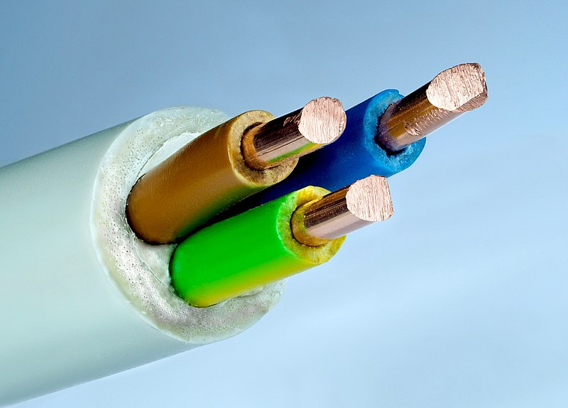
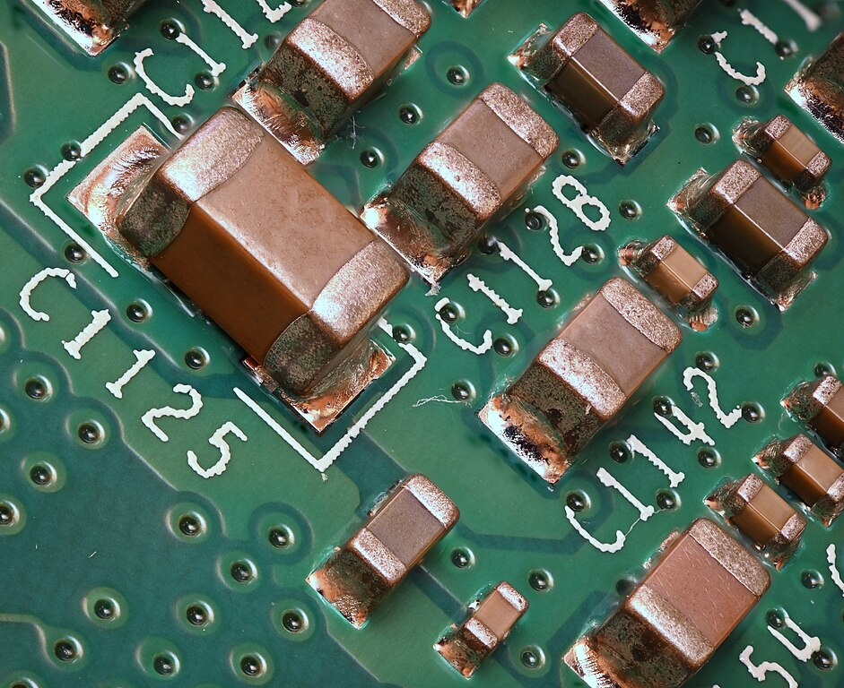
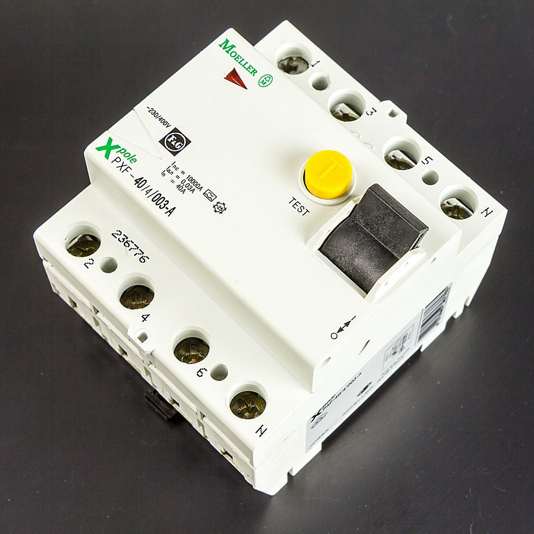

The electrical circuit¶
An electrical circuit is a set of components that generate and control the flow of electricity to produce useful effects.
A simple example of an electrical circuit is the one we all use when turning on the light in a room.
Circuits are made up of four types of components: generators, conductors, receivers and control elements. They will be studied in more detail below.
Generators¶
These components are responsible for generating electrical current. To achieve this, they drive the electrons to circulate through the circuit.
Examples of generators are batteries, bicycle dynamos, automobile alternators or photovoltaic solar panels.


Panel fotovoltaico de generación eléctrica solar.¶
Drivers¶
Conductors carry electricity between circuit components. They are usually electrical cables.
The most common materials used to conduct electricity are:
- Copper:
It is the most widely used inside buildings, in flexible cables for electrical appliances and for the manufacture of electric motors.
Cable de cobre, de 3 hilos únicos de 2.5mm de diámetro cada uno.¶
Petar Milošević, CC BY-SA 4.0, via Wikimedia Commons.- Aluminum and steel:
They are the most used materials in high voltage cables. They have good mechanical resistance, resist oxidation well and are cheaper than copper.
- Gold and nickel and chromium:
They are used in the coating of electrical contacts to prevent oxidation and improve conduction. They can be seen on the audio jacks and USB connectors.
- Tin, lead and silver:
Due to their low melting temperature (less than 300ºC) they are used in the soldering of electronic components. Silver, despite being more expensive, is being used more and more because it does not produce the toxic effects of lead.
Componentes SMD unidos a la PCB con soldaduras de estaño-plomo.¶
Phiarc, CC BY-SA 4.0, via Wikimedia Commons.

{kind=link}
{kind=link}
{kind=link}
{kind=link}
{kind=link}
Receivers¶
The receiving components convert the electricity into useful effects such as light, heat, motion, sound, etc.
Some examples of receptors are light bulbs, fans, microwave ovens, refrigerators, televisions, etc.
{kind=link}
Lámpara led. Produce luz a partir de la electricidad.¶
{kind=link}
Resistencia eléctrica de una vitrocerámica, produciendo calor.¶
Control elements¶
These elements allow the flow of electricity to be controlled as appropriate. The simplest example is a switch that turns the light on or off, allowing electricity to pass through when it suits us.
Depending on how they are activated, there are several types of control elements.
- Manual override:
Switches, pushbuttons, rotary knobs, etc. They allow people to control electrical appliances.
Each manual control element has its practical application. When controlling a doorbell, a switch cannot be used because after pressing it, the doorbell will work non-stop. In this application we will use a push button better, which only activates the bell while we are pressing it.
- Electrical protection:
Fuses, automatic switches, differentials, etc.
Fuses and circuit breakers cut off electricity to protect the electrical installation and prevent wires from burning if there is a short circuit or overload.
The differential protects our lives by cutting off the current before an electrical shunt can electrocute us.
Interruptor diferencial. Protege a las personas de descargas eléctricas.¶
Raimond Spekking, CC BY-SA 4.0, via Wikimedia Commons.- Automatic drive:
Some control elements are actuated from electrical signals. This allows automatic control, saving the intervention of a person.
Examples of automatic activations are the light of a staircase that turns off by itself after a while, an electric door that opens by itself when detecting presence, an intelligent building that controls temperature, humidity, opening of blinds, irrigation, etc. .
{kind=link}
{kind=link}
{kind=link}